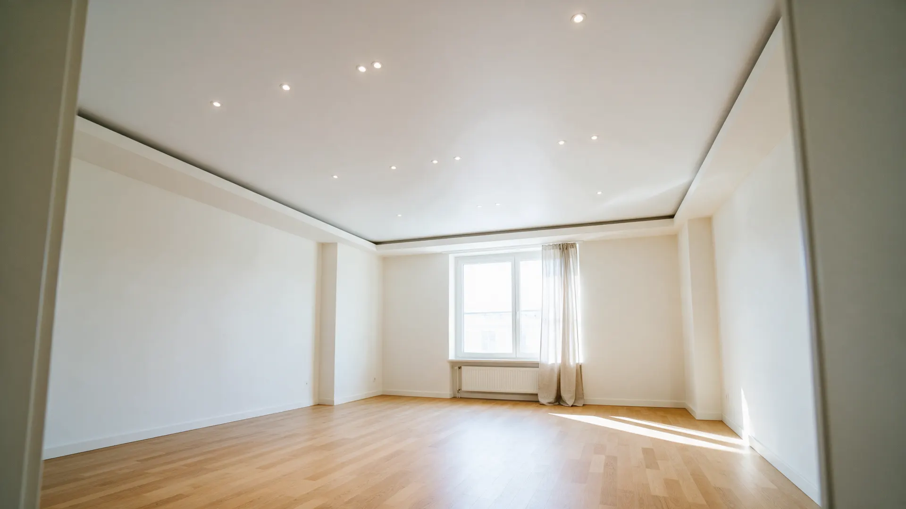
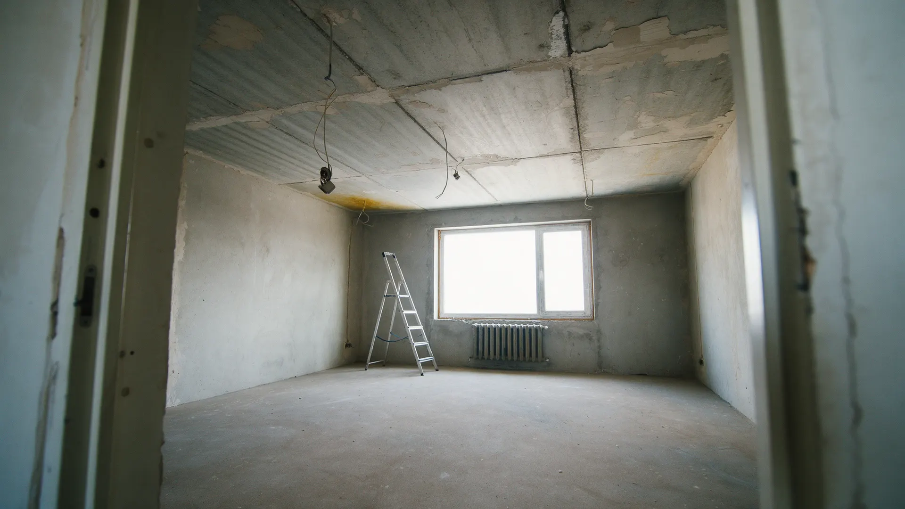
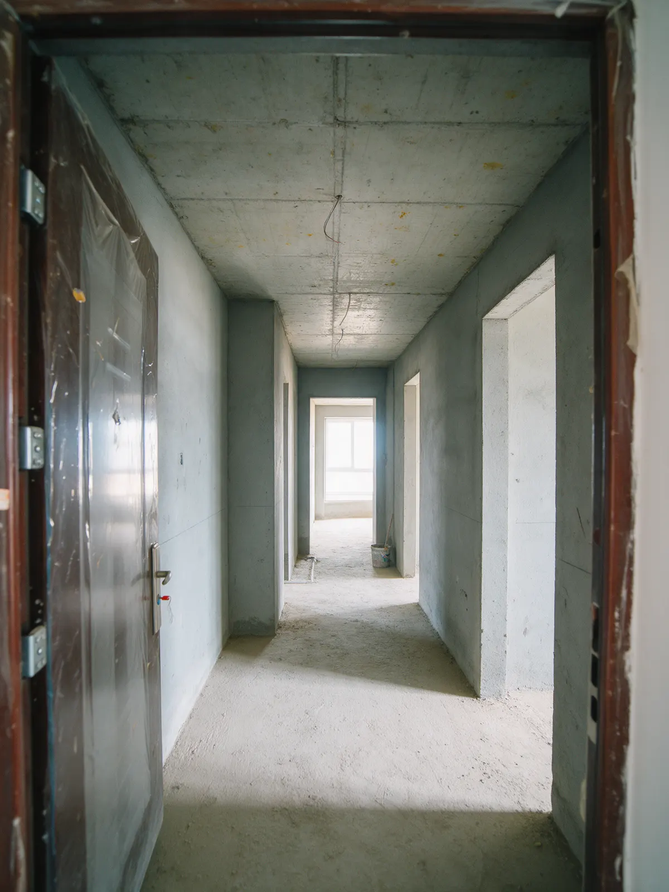
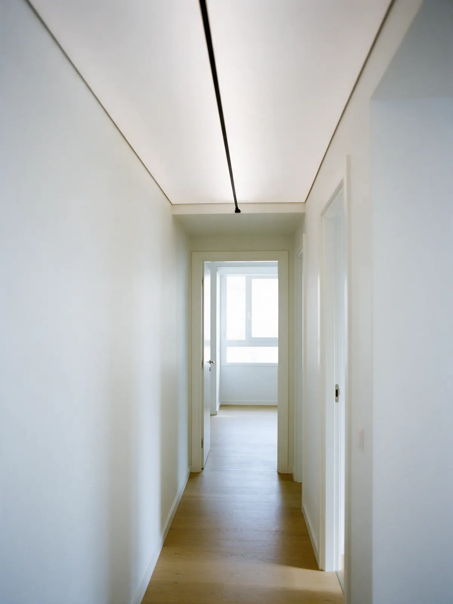
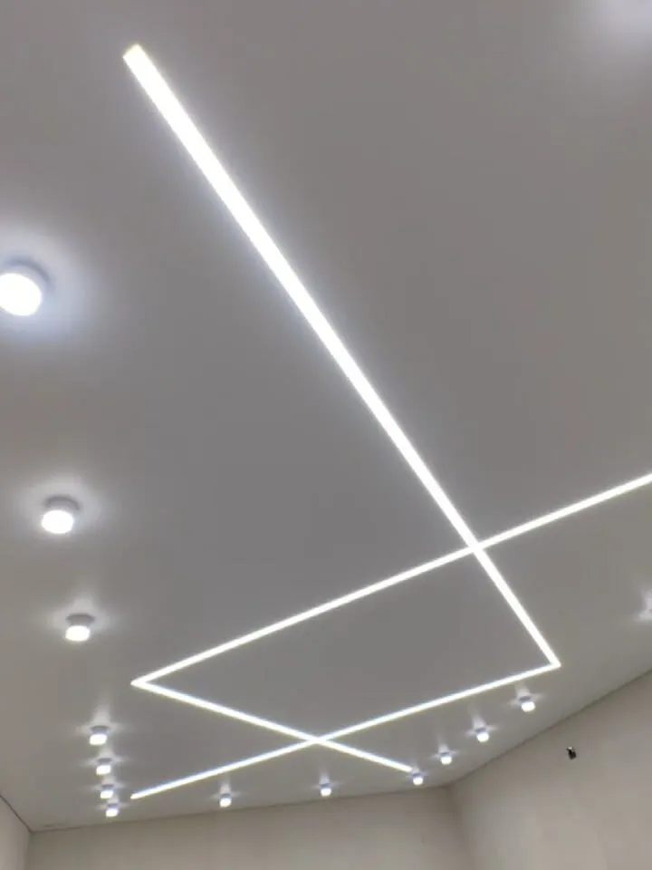
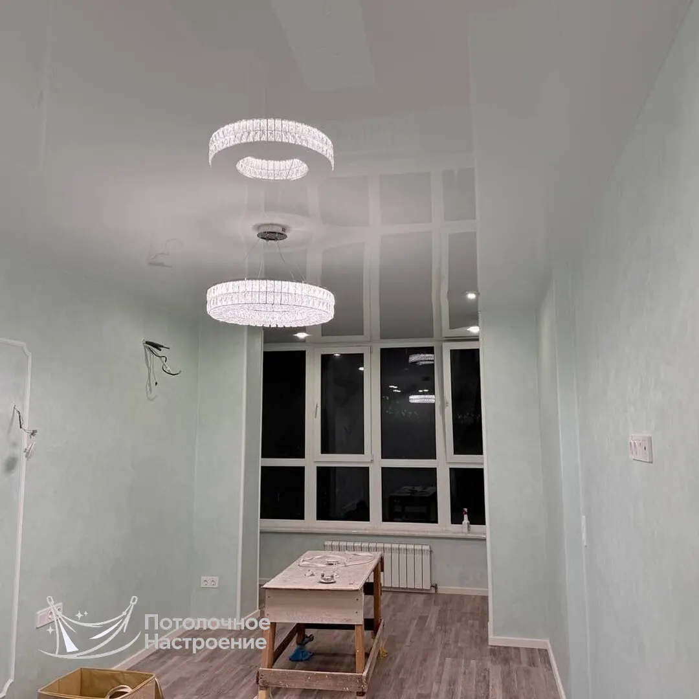
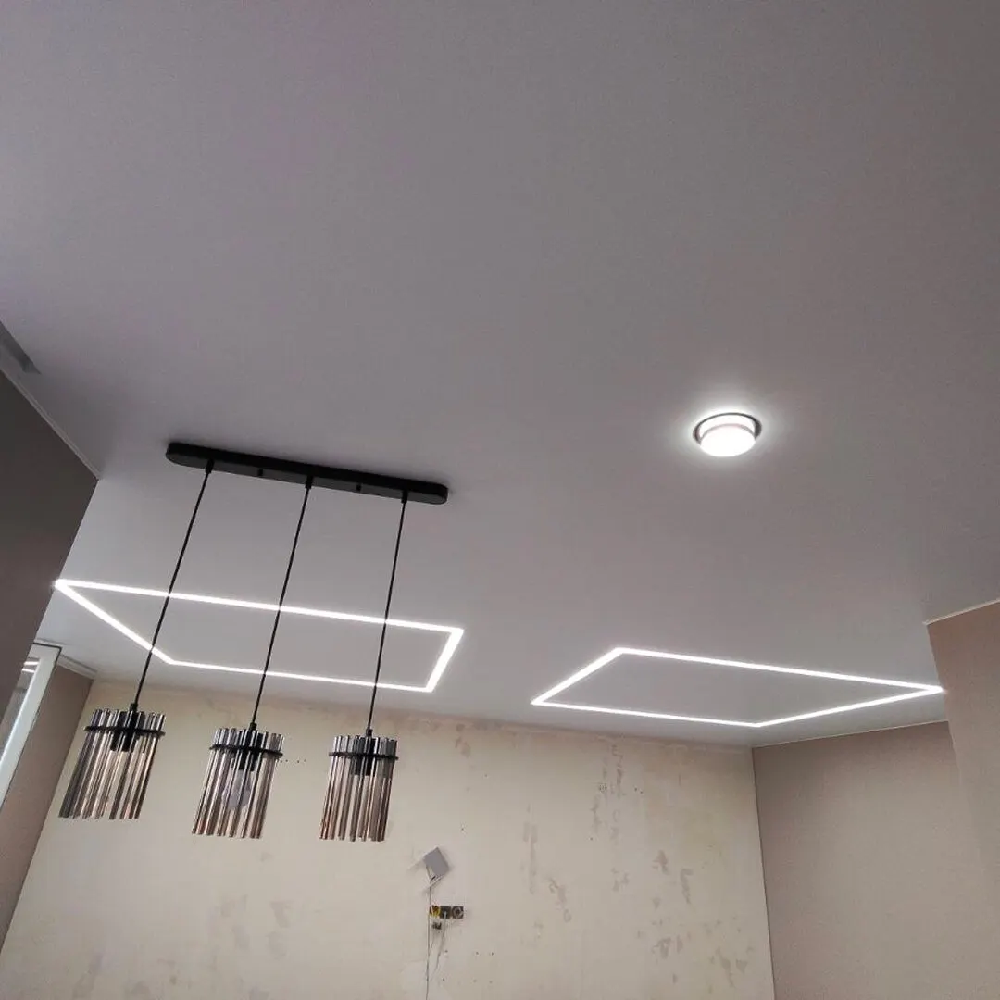
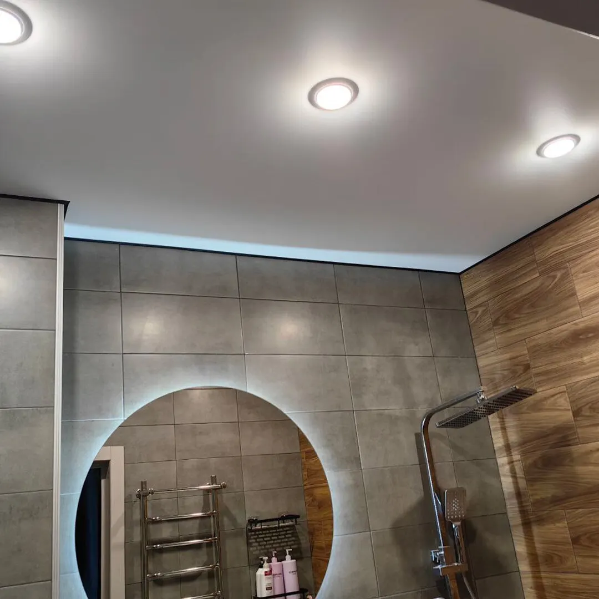
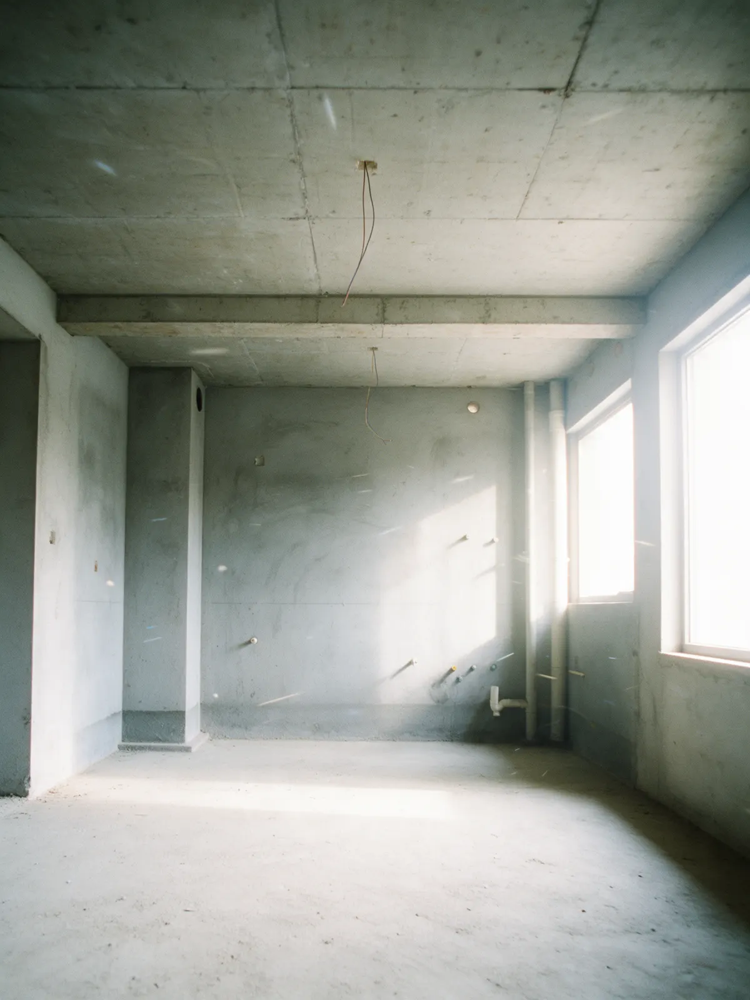
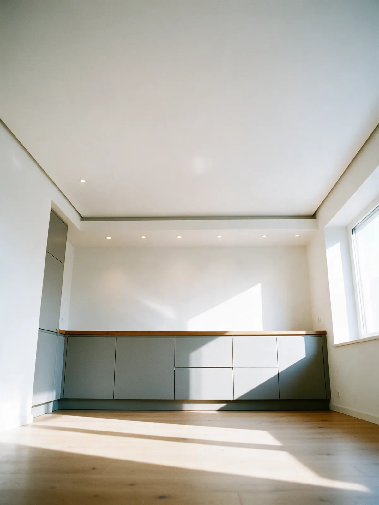

Было: бетон, провода, пятна
Натяжные потолки в Ростове-на-Дону – с бесплатным замером
Матовые, сатиновые, глянцевые и цветные. Цену называем после замера, мастера работают быстро и убирают за собой.
Позвоните или напишите в Telegram – договоримся о замере.
Потолок с пятнами и швами плит
Побелка сыплется, провода торчат, а после протечки сверху остаются разводы. С таким потолком не поставить ни свет, ни люстру.

Бесплатный замер, расчёт после замера
Мастер приезжает на замер бесплатно: запишитесь по телефону. Полную цену называем после замера и консультации. Одна клиентка пишет: потолки на 62 м² сделали за один день.

Цена «от» выросла вдвое
Сначала красивая цифра за метр, потом отдельно профиль, свет, углы и люстра. Итог не похож на первую цифру.
Полотно и свет: считаем после замера
Выбираете фактуру: матовую, сатиновую, глянцевую или цветную. Светильники и световые линии подбираем на замере. Цену называем после замера.
1Замер
Бесплатно, мастер приезжает по звонку
2Полотно
Матовое, сатиновое, глянцевое, цветное
3Свет
Споты, световые линии, люстры
4Монтаж
Клиенты пишут: быстро и с уборкой за собой

Грязь после монтажа и переделки
После мастеров остаются мусор и следы, а то, что вышло не так, обещают «переделать потом».
Мусор на полу
Убирать приходится вам
Следы на стенах
Профиль и полотно задевают отделку
«Переделаем потом»
Ждёте мастера ещё неделю
Быстро и с уборкой за собой
Клиенты пишут, что мастера внимательны к деталям, аккуратны и выносят за собой мусор. Потолок на 62 м² сделали за один день.

Обещания на словах
Красивый сайт, фото из интернета и «довольные клиенты» без имён. Проверить нечего, остаётся верить.
Чужие фото
Портфолио, которого не было
Отзывы без имён
Написаны самим подрядчиком
Нет карточки на Картах
Не на что посмотреть
Что пишут на Яндекс.Картах
-
«Спасибо за работу 🤝 Очень внимательны к деталям, аккуратны, вынесли мусор, советовали как лучше, даже удешевив конечный чек. Сделали 62м² за 1 день. Все шикарно, буду рекомендовать всем🙏»
-
«Ребята сделали потолки качественно,бысро,одним словом мастера своего дела. Убрали за собой мусор. Мне очень понравилось,я в восторге! Рекомендую всем !!!»
-
«Спасибо большое за проделанную работу. Все выполнили достаточно быстро, при этом качество на высоте. Видно, что мастера опытные и знают свое дело.»
Фото с карточки на Яндекс.Картах
-

Подсветка и люстра 
Потолок в ванной

Было: кухня с бетонным потолком
Плиты, провода и выводы труб. Отсюда считаем.
Цены и что входит
Цены с карточки на Яндекс.Картах: указано «от», полный расчёт после замера и консультации с мастером.
Матовый натяжной потолок
Спокойная ровная поверхность
после замераот 500 ₽Сатиновый натяжной потолок
Мягкий блеск, как у ткани
после замераот 500 ₽Глянцевый натяжной потолок
Отражает свет и расширяет комнату
после замераот 500 ₽Цветной натяжной потолок
Любой цвет полотна
после замераот 500 ₽
Полный расчёт называем после замера и консультации с мастером. Замер бесплатный, записаться можно по телефону.
Рассчитать потолок
Было: бетон, провода, пятна
Осталось здесь.
Стало: ровный потолок со светом
Позвоните или напишите в Telegram – договоримся о замере.
Рассчитать потолок